01 · exam facts
What the mid-term is worth, and what it covers
source: handout section E, and the E row of the plan
| Assessment | Detail | Marks |
|---|---|---|
| Mid-Term Examination | closed book, lectures 1 to 16 | 30 |
| Class Work Sessional | quiz, MOOC, assignment | 30 |
| End Term Examination | closed book, whole syllabus | 40 |
Coverage facts
| 1 to 16 | lectures inside the mid-term |
| CO1, CO2 | outcomes examined before the exam row |
| lecture 10 | class test 1, CO1 topics, counts to CWS |
| 5 verbs | understand, define, represent, perform, implement |
| 30 + 30 | marks already decided before the end-term |
02 · the sixteen lectures
As the handout lists them, with the material state
source: handout section G, pages 4 to 6
re-checked on 300 dpi page images
Topic and session outcome wording is the handout's own. The material column is not the handout's: it says whether a verified artifact exists on this machine for that lecture.
| L | Topic | Session outcome | CO | Material |
|---|---|---|---|---|
| 1 | Introduction and Course Hand-out briefing | Understand basics of subject and assessment | 1 | no artifact needed |
| 2 | Introduction to C++/Python, Features, Program Structure | Understand basic language syntax and operations | 1 | lesson 01 |
| 3 | Basic Terms: Variables, Data Types, Operators, Input/Output | Understand basic language syntax and operations | 1 | lessons 02, 03 |
| 4 | Control Statements and Functions (Overview) | Understand basic language syntax and operations | 1 | lessons 03, 04 |
| 5 | Introduction to Data Structures and Memory Representation | Define basic data structures and explain their memory allocation | 1 | guide plus verifier |
| 6 | Linked List: Concept, Types, Node Representation | Represent linked lists in memory | 1 | notes, lesson 06 |
| 7 | Linked List Operations: Creation and Insertion, Deletion and Traversal | Represent linked lists in memory | 1 | lesson 07 |
| 8 | Searching in Linked List, Applications, Numerical Problems and Practice | Perform traversal and search operations | 1 | lesson 08, numericals |
| 9 | Tutorial | Perform traversal and search operations | 1 | notes section 7 |
| 10 | Class Test | Assess understanding and application of covered topics | 1 | two shipped self-tests |
| 11 | Stack: Concept and array representation | Implement stacks and queues in memory | 2 | one explainer page |
| 12 | Stack using Linked List, Stack Application | Implement stacks and queues in memory | 2 | gap |
| 13 | Queue: Concepts and Array Representation | Implement stacks and queues in memory | 2 | gap |
| 14 | Queue using Linked List and Circular Queue | Implement stacks and queues in memory | 2 | gap |
| 15 | Queue Applications | Implement stacks and queues in memory | 2 | gap |
| 16 | Recursion and Recursive Algorithms | Apply recursion and linear DS to solve problems | 2 | lab code plus probe |
03 · the chain
The dependency chain, drawn as it actually runs
dot colour = material state
green built, amber partial, plum missing
CO1 · lectures 1 to 10
C++ or Python foundation
variables, types, operators, control flow, functions: the syntax you will write everything else in
Memory representation
addr(&a[i]) = base + i × sizeof(T), contiguous against scattered, stack against heap
Node and list types
16 byte singly node, padding explained, singly, doubly and circular
Insert and delete
O(1) at a held position, O(n) to reach it, the pointer writes counted
Traversal and search, numericals
hops against one computed access, and the twelve problems below
Tutorial and class test 1
the checkpoint the handout puts at lecture 10
CO2 · lectures 11 to 16
Stack over an array
LIFO at one end, capacity fixed, overflow the moment you pass it
Stack over a linked list
same operations, no capacity limit, one 32 byte node per element
Queue over an array
FIFO, front and rear indices, the reason a naive array wastes space
Queue as a list, and circular
wrap-around with (rear + 1) mod capacity, count from front and rear
Queue applications
scheduling and buffers, the reason FIFO order matters
Recursion
the call stack is a stack: 48 bytes per frame measured here, Hanoi calls and moves both 2ⁿ - 1

04 · outcomes
What to be able to do, per course outcome
source: handout outcome statements, shortened
CO statements
| CO1 | Explain concepts of object-oriented programming using C++ or Python |
| CO2 | Explain the basic operations on arrays, lists, stacks and queue data structures with programming examples |
Proof you own it, per skill
| Address arithmetic | compute &a[7] from a given base by hand, in one line |
| Node representation | draw the 16 byte node with the padding marked, name both offsets |
| Insert and delete | write the pointer writes for insert at position and delete last, without notes |
| Traversal and search | count the hops for a given list and compare with the array's single computed access |
| Memory accounting | state 4 bytes per element against 32 bytes per node, and say why |
| Stack both ways | push and pop over an array and over a linked list, and say which is cheaper when |
| Queue wrap-around | given capacity, front and rear, compute the element count and the next slot |
| Recursion | trace factorial, fibonacci and Hanoi, and state depth, calls and frame bytes |
05 · the plan
Seven sessions, each with a proof
roughly 90 minutes each
do not move on without the proof
The proof is the exam answer. If you cannot produce it, the session is not finished, however much you have read.
Lecture 5: read the memory notes, then work guide sheets 01 to 04
Proof: the verifier prints 81/81 checks pass
90 min
Lecture 6: list concept, types, node representation, lesson 06
Proof: draw the 16 byte node and all three list types from memory
90 min
Lecture 7: insert and delete, lesson 07 then the exercise file
Proof: write insert-at-position on paper, then diff it against the code
90 min
Lecture 8: search and applications, lesson 08
Proof: solve the twelve numericals below with nothing open
90 min
Lectures 11 and 12: stack over an array, then over a linked list
Proof: both builds print the same operation log for the same input
110 min
Lectures 13 and 14: queue over an array, as a list, then circular
Proof: survive two full wrap-arounds and write the count formula
110 min
Lecture 16: recursion, lab experiments, then the frame probe
Proof: your traced Hanoi counts match the probe's 7 calls, 3 frames deep
90 min
Mock paper: forty questions, closed book
Proof: a score, then re-read only the questions you missed
60 min
06 · numericals
Twelve problems, the part lecture 8 names explicitly
constants measured here
4, 1, 8, 16, 32, 24, 48 bytes
Constants used in every answer: sizeof(int) = 4, sizeof(char) = 1, sizeof(pointer) = 8,
sizeof(Node) = 16 for {int data; Node* next;}, allocator stride 32 bytes per node with
24 usable, one stack frame 48 bytes. Work them on paper; the answers stay hidden, and the whole key
also sits in its own section at the end so you can self-test cold.
- An array
int a[5]starts at0x7ffe7c3131b0. Give the address ofa[3]and how many memory accesses it takes.show answer
0x7ffe7c3131b0 + 3 × 4 = 0x7ffe7c3131bc, one multiply and one add, so a single access. - A linked list holds the same five integers. Give the address expression for node 3 and how many accesses it takes.
show answer
There is no expression: node 3's address is stored inside node 2, so it costs four walks from the head.
int a[5]occupies how many bytes? The equivalent list occupies how many bytes charged? Give the ratio.show answer
Array 20 bytes, list 5 × 32 = 160 bytes charged. Eight times more: padding plus allocator bookkeeping.
- Write the formula for
&a[i]and use it withbase = 0x1000,i = 7,sizeof(int) = 4.show answer
&a[i] = base + i × sizeof(T)gives0x1000 + 28 = 0x101C. struct Node { int data; Node* next; };is 16 bytes, not 12. Where do the extra four bytes sit, and why must they?show answer
Four padding bytes between
dataandnext, so the 8 byte pointer starts on an 8 byte boundary.- A singly linked list has five nodes. How many pointer writes does inserting at position 3 need, if you already hold the predecessor?
show answer
Two: the new node's
nextto the successor, and the predecessor'snextto the new node. - Same list: how many pointer writes does deleting the last node need, and what must you hold to do it in O(1)?
show answer
Two writes, but you must hold the second to last node, otherwise finding it is an O(n) walk.
- How many hops does searching for the value in the last node take in a list of n nodes, against the same search in an array?
show answer
n hops against one computed access, but the array access needs the index, not the value.
- A stack is built over an array of capacity 8 and the program pushes 9 values. What happens with
std::vector, and with a raw array?show answer
The vector reallocates into doubled capacity and copies; the raw array writes out of bounds, which is undefined behaviour.
- A circular queue has capacity 5,
front = 3,rear = 1. How many elements are stored, and which slot does the next enqueue use?show answer
(rear - front + capacity) mod capacity = 3elements, so the next enqueue lands at slot 2. factorial(4)is called. How many frames are alive at the deepest point, and how many bytes is that at 48 bytes per frame?show answer
Measured: four recursive calls nested, five frames counting
main, about 240 bytes.- Towers of Hanoi with three disks: how many moves, and how many recursive calls?
show answer
Measured: seven moves and seven calls, both
2³ - 1, deepest nesting three frames.
07 · evidence
Recursion, measured rather than asserted
from lec16_recursion_output.txt
zero warnings under -Wall -Wextra
| Call | Recursive calls | Deepest nesting | Moves |
|---|---|---|---|
factorial(1) to factorial(5) | n | n | n/a |
factorial(4), frames alive | 4 | 4 plus main | n/a |
| Hanoi, n = 1 | 1 | 1 | 1 |
| Hanoi, n = 2 | 3 | 2 | 3 |
| Hanoi, n = 3 | 7 | 3 | 7 |
| Hanoi, n = 4 | 15 | 4 | 15 |
The two things this pins down
- Every Hanoi call performs exactly one move, so calls and moves are both
2ⁿ - 1. There is no second count to memorise. - The probe measured 144 bytes across four nested frames: the same
48 bytes per framethe lecture 5 capture reported. Two independent runs, one number. - Question 11 charges five frames, not four: the four recursive
factorialframes plusmain. Both numbers are the same measurement read two ways, 4 x 48 = 192 bytes of recursion inside 5 x 48 = 240 bytes of stack. - Recursion questions are frame questions: depth is memory, and the base case is what stops the stack growing.
08 · inventory
What exists, and what is still missing
checked on disk, this session
| Area | Materials | State |
|---|---|---|
| Lecture 5, memory | Notes/intro-memory/: interactive guide, notes, 5 rendered diagrams, verifier | complete, verified |
| Lectures 6 to 8, lists | Notes/linked-list/: notes, 4 diagrams, lessons 06 to 08, verifier | complete, verified |
| Lectures 2 to 4, C++ | ~/learning/cpp/lessons/01 to 05, C++ language plan | complete |
| Lectures 11 to 12, stacks | one explainer page, no course-mapped notes, no array against linked cost artifact | weak |
| Lectures 13 to 15, queues | nothing, including the circular queue wrap-around | missing |
| Lecture 16, recursion | lab code plus the measured frame probe, no notes page or frame diagram yet | improved |
| Exam practice | self-tests inside the two shipped guides, plus the twelve numericals here | partial |
09 · honesty
The five gaps, stated plainly
what this dossier does not fix for you
- Stacks and queues have no course-mapped artifact. Five of the sixteen lectures sit there, and they are the most likely draw-and-compute questions.
- Circular queue wrap-around has no worked example. Capacity, front, rear, count, next slot: a classic two-mark trap.
- Recursion has code and numbers but no frames diagram, and every recursion question is really a frame question.
- Nothing ties the numericals into one timed paper yet. That is the only way to learn whether the arithmetic is automatic under pressure.
- This dossier is a plan, not practice. Sessions 5 and 6 of the sequence are what turn reading into marks, and neither has material yet.
10 · sources
Where every claim here came from
no claim without a file behind it
| Source | What was taken from it |
|---|---|
| Handout section E | assessment plan: mid-term 30, CWS 30, end term 40 |
| Handout section G, pages 4 to 6 | lecture plan rows, verbatim topic and outcome wording, CO mapping, and the position of the MID SEMESTER EXAMINATION row after lecture 16 |
| Handout sections F and H | syllabus summary and the five course outcome statements |
| 300 dpi page images | the critical lecture plan rows re-read as images, because a dense table is where a text layer scrambles columns |
lec05_run_output.txt | every size, offset and stride quoted here |
lec16_recursion_output.txt | every call, frame and move count in section 7 |
DAS-LAB/Exp0 to Exp4 | which lab experiments already cover array operations, sorting, recursion and priority queues |
answer key, kept out of the problem list on purpose
The twelve answers in one block, for a cold self-test
| Q | Answer, short form |
|---|---|
| 1 | 0x7ffe7c3131bc, one access, one multiply and one add |
| 2 | not computable, the address is stored in the previous node, four walks |
| 3 | 20 bytes against 160 bytes charged, eight times |
| 4 | 0x101C |
| 5 | four padding bytes before next, to keep 8 byte alignment |
| 6 | two pointer writes |
| 7 | two writes, but you must hold the second to last node |
| 8 | n hops against one computed access, and the array needs the index |
| 9 | vector reallocates and copies, raw array is undefined behaviour |
| 10 | 3 elements, next enqueue at slot 2 |
| 11 | 4 recursive calls nested, 5 frames with main, about 240 bytes |
| 12 | 7 moves and 7 calls, both 2³ - 1, nesting 3 frames deep |